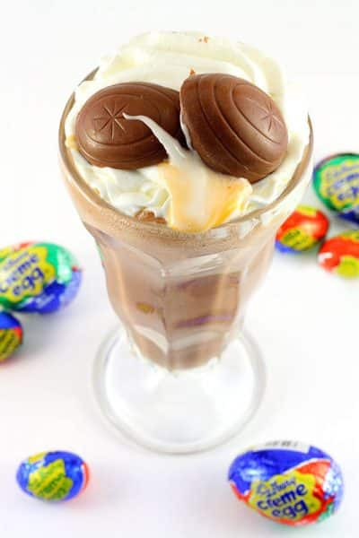

Creme Egg Mcflurry Recipe

Description
This super simple recipe will turn regular vanilla ice cream into a gooey, chocolatey Creme Egg dessert in no time.
Top tip - Don't over blend the ice cream and milk. We don't want to end up with a milk shake!
Ingredients
- 3 1/2 Cups of Vanilla Ice Cream
- 1/4 Cup of Milk
- 3 Cadbury Creme Eggs
- 1/2 Cup of Chocolate Chips
Steps
- Unwrap and chop up all of the Cadbury Creme Eggs. Divide the crushed eggs in half and set aside.
- Crush or chop the chocolate chips and set aside.
- Blend your choice of vanilla ice cream (we recommend Ben & Jerry’s) and milk.
- 30 seconds before the end of blending, pour in one half of the Creme eggs and blend for 30 seconds longer.
- Empty the contents of the ice cream into 2 glasses or bowls and fold in the crushed chocolate chips.
- Sprinkle the second half of the Creme eggs on top of both desserts.
- Enjoy your homemade Creme Egg McFlurry immediately!